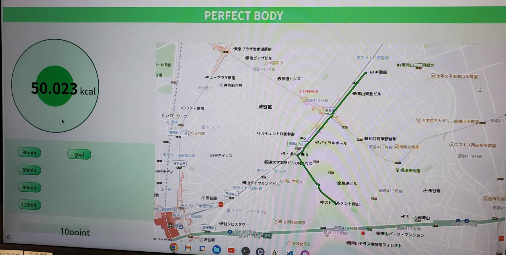
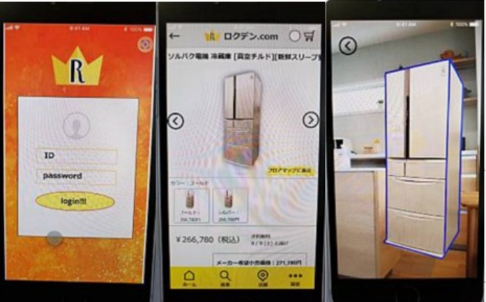

PROJECT

- 株式会社ナビタイムジャパン
- チームでWebサイトを開発
・期間： 1週間
・担当業務： Webデザイン
・プロジェクト： 自社APIを使用しカロリー計算をしてくれる散歩のサイトの開発
・使用技術： HTML, CSS, JavaScript

- 株式会社ソルパック
- チームでSE職を経験
・期間： 1週間
・担当業務： SE職全般
・プロジェクト： アプリの改善点をチームで考え発表し、実際に改善したアプリを開発
・使用技術： Javaなど
- キャノンマーケティングジャパン
- チームでwebマーケティング
・期間： 2日間
・担当業務： Web解析ツールを利用した分析
・プロジェクト： 今後どの様な商品が必要とされている社会になるかを話し合った
- 株式会社HRbrain
- HRサービスについてのアイデアソン
・期間： 二日間
・担当業務： チームリーダー
・プロジェクト： チームにて50年後の労働人口低下によるHR領域の課題を解決するためのアイデア
・結論： 既存の機能に加え、 マッチング理論に基づく適切な人員配置やストレス検知サービスを追加する